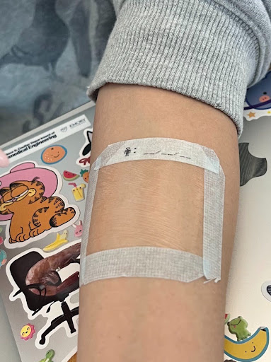
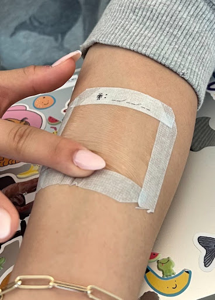
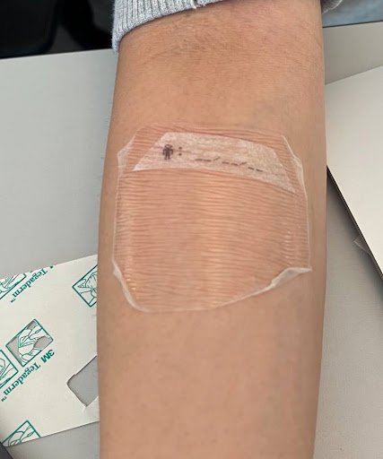
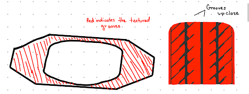
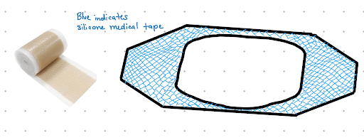
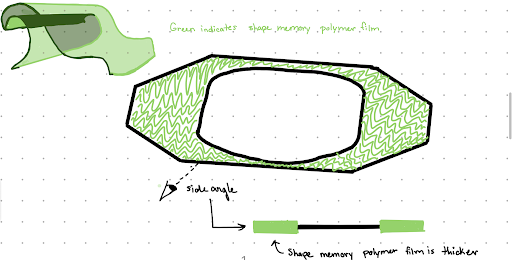
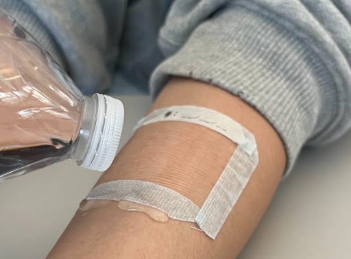

Adhesion
Remain securely attached during movement so the protective barrier is not easily compromised.
Improving adhesion and durability in high-motion areas.
A reinforced silicone adhesive border designed to help Tegaderm remain secure during everyday movement.


01 — Overview
This project explored how the 3M Tegaderm 1624W transparent film dressing could be redesigned to better withstand movement in areas of the body that frequently bend.
Through product analysis, stakeholder research, concept development, and physical testing, our team investigated how the dressing could maintain its protective qualities while becoming more durable during everyday movement.
The Tegaderm's thin polyurethane film and perimeter adhesive could begin peeling or folding when used near high-motion areas, potentially weakening the protective seal around the wound.
Improve durability and adhesion without sacrificing the flexibility, comfort, and protective properties that make a transparent film dressing useful.
02 — Analysis
Before redesigning the product, we examined how the existing dressing worked, who interacted with it, and which properties needed to remain intact.

Tegaderm is designed to create a transparent protective barrier while allowing water vapor and oxygen exchange. Those qualities were important to preserve.
The opportunity appeared around the perimeter. During movement, the edges could begin lifting and folding, making durability and adhesion central to our redesign.
03 — Problem Definition
Our stakeholder analysis included patients, nurses, doctors, hospitals, insurers, manufacturers, and regulatory considerations. As the project developed, patients became the central focus because they directly experience the dressing's comfort, mobility, adhesion, and durability.
“Patients will need a flexible and durable Tegaderm in order to comfortably move with the product applied to areas of high motion without worrying about the bandage losing its adhesion and filtration properties.”
04 — Design Requirements
Research helped us translate stakeholder needs into four properties that guided concept development and evaluation.
Remain securely attached during movement so the protective barrier is not easily compromised.
Conform to the body's movement without unnecessarily restricting the patient.
Resist peeling, folding, and structural failure during extended everyday wear.
Maintain a barrier that helps protect the wound from water and external contaminants.
05 — Ideation
Our brainstorming process produced ten possible approaches, ranging from changes in adhesive distribution and bandage geometry to entirely different film structures.
We narrowed that exploration into three concepts that approached the durability problem in meaningfully different ways.

Inspired by tread patterns, this concept explored whether adding texture to the adhesive surface could increase friction and reduce movement.

A reinforced perimeter inspired by more durable adhesive bandages. The border could support the Tegaderm's weakest area while allowing the transparent center film to remain largely unchanged.

This concept explored replacing the traditional film with a material capable of returning toward its original form after deformation.
06 — Design Direction
The silicone-border concept directly addressed two of our most important requirements: flexibility and durability.
Instead of completely redesigning the transparent film, the concept reinforced the perimeter — the area where peeling and folding were occurring.
Strengthen the perimeter
Maintain flexibility
Reduce edge lifting
07 — Prototype
We created a physical prototype by reinforcing the Tegaderm's perimeter with silicone-like medical tape and applying it near an area of frequent movement.
08 — Evaluation
Rather than evaluating the prototype in isolation, we compared it with the original Tegaderm under similar conditions.
Both versions were positioned near a high-motion area and exposed to similar arm movements to observe how well the dressing conformed to the body.
We observed edge lifting and how long the dressings remained intact during wear.
Water was introduced around the perimeter to observe whether the dressing maintained its seal and resisted edge folding.
The water test examined whether introducing moisture around the perimeter would cause the edges to lift.
The original dressing remained water resistant, but its edges began folding. The reinforced prototype maintained the perimeter more effectively during the test.

09 — Outcome
The prototype demonstrated that reinforcing the perimeter could improve adhesion and resistance to edge folding while still preserving the central transparent film.
Approximate wear-time improvement observed during prototype testing.
10 — Iteration
The prototype improved several aspects of the original design, but testing also revealed new problems — an important reminder that improving one requirement can introduce another constraint.
The reinforced border reduced the edge folding observed in the original dressing.
The additional border made the dressing bulkier than the original transparent film.
Stronger adhesion could make removal less comfortable and created some restriction around areas of especially high movement.
11 — Reflection
The project taught me to connect engineering decisions back to the people affected by them. Durability matters because it influences comfort, movement, wound protection, and the patient's everyday experience.
A solution can improve one requirement while creating another problem. Physical testing revealed issues like thickness and removal discomfort that were difficult to predict from sketches alone.
Moving from stakeholder needs to requirements, concepts, prototypes, and testing showed me that engineering design is not a straight path toward a perfect answer. Each stage creates information for the next iteration.